What Moves Markets?
This code gives a basic overview of the event database from the paper "What Moves Markets?" by Mark Kerssenfischer and Maik Schmeling
Notes:
- All intraday timestamps refer to GMT.
- The database currently contains three types of events: 1) auctions (announcements and results; for the US and Germany; from the websites of the US Treasury and the German Finance Agency), 2) central bank announcements (for eight major central banks), and 3) ad hoc events (such as natural catastophies, rating events, etc.)
- The database does currently not contain events from Bloomberg, such as macroeconomic data releases and auctions regarding France, Italy, Spain
Contents
Data Format
display first ten rows of event database
10×6 timetable
eventstart eventend type subtype subsubtype description scheduled
________________ ________________ ______________ _________________ __________________ _____________________________________________________ _________
04.03.2002 16:30 NaT "Auction" "US Announcement" "Bill" "CUSIP 912795JN2" true
05.03.2002 05:00 NaT "Central Bank" "BoJ" "Minutes" "Minutes on January 15/16 Meeting" true
05.03.2002 14:00 NaT "Central Bank" "BoC" "Press Release" "" true
05.03.2002 18:00 NaT "Auction" "US Result" "Bill" "CUSIP 912795JN2" true
05.03.2002 22:30 NaT "Central Bank" "RBA" "Press Release" "" true
06.03.2002 19:00 NaT "Central Bank" "Fed" "Beige Book" "Beige Book Release" true
07.03.2002 12:00 NaT "Central Bank" "BoE" "Press Release" "MPD" true
07.03.2002 12:45 NaT "Central Bank" "ECB" "Press Release" "GCM PR" true
07.03.2002 13:30 07.03.2002 14:08 "Central Bank" "ECB" "Press Conference" "GCM PC" true
07.03.2002 15:00 07.03.2002 17:35 "Central Bank" "Fed" "Speech by Chair" "Greenspan Senate Testimony (Monetary Policy Report)" true
Event Categories
number of monthly events for each category
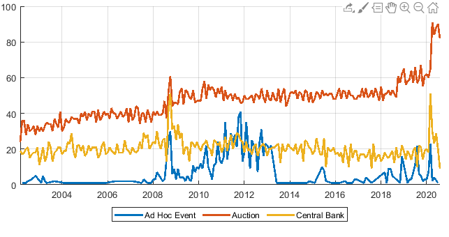Event Sub-Categories
number of quarterly events for each subcategory
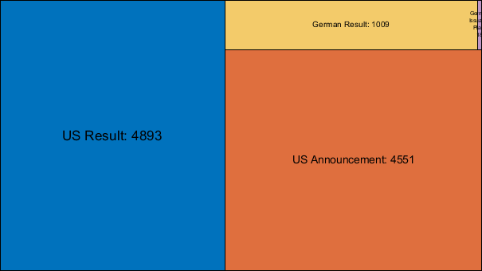 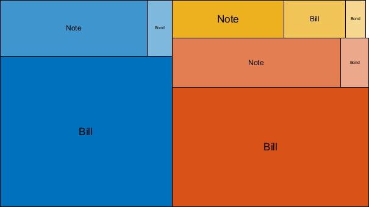 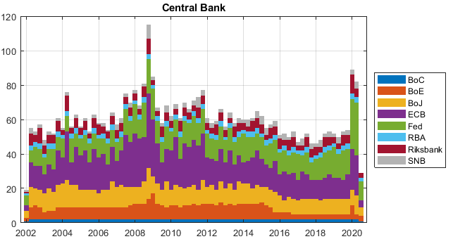Central Bank Announcements
number of quarterly events for each central bank
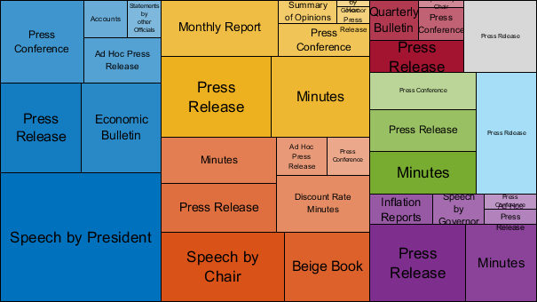 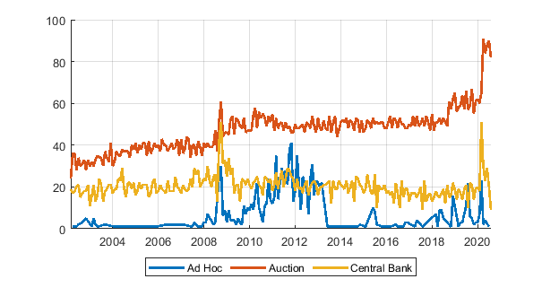 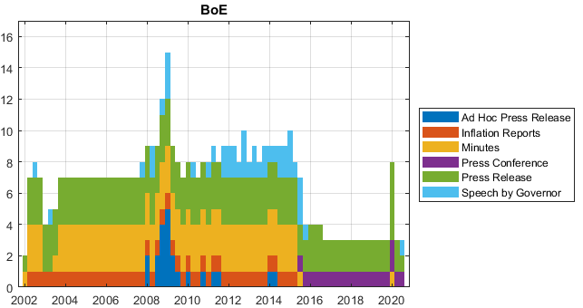 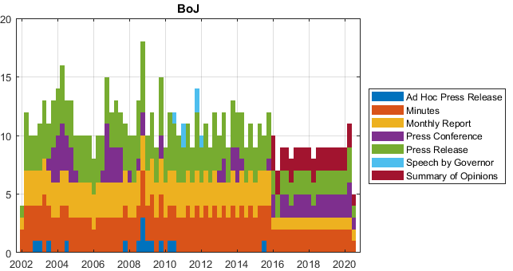 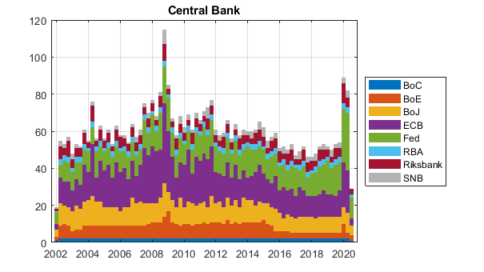 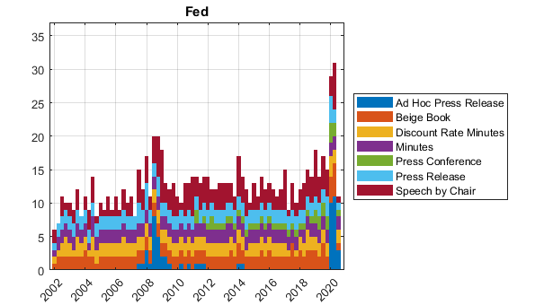 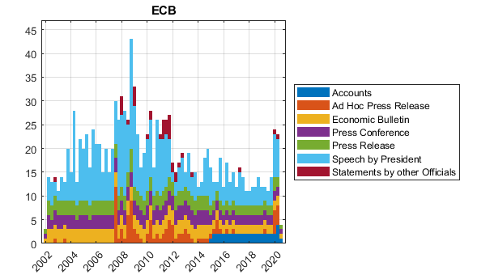 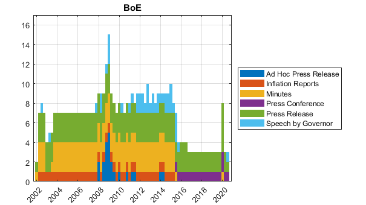